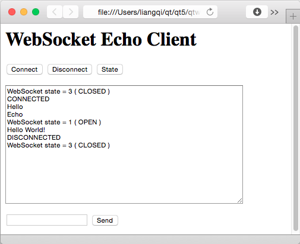

Echo Server Example
Shows how to create a simple server application that sends back the messages it receives.
The Echo Server Example shows how to create a simple server application that sends back the messages it receives, using the WebSocket API.
If your web browser supports WebSocket, you can also use it to open the echoserver/echoclient.html{echoclient.html} file, and operate like the following screenshot.

Client example
See also Echo Client Example.